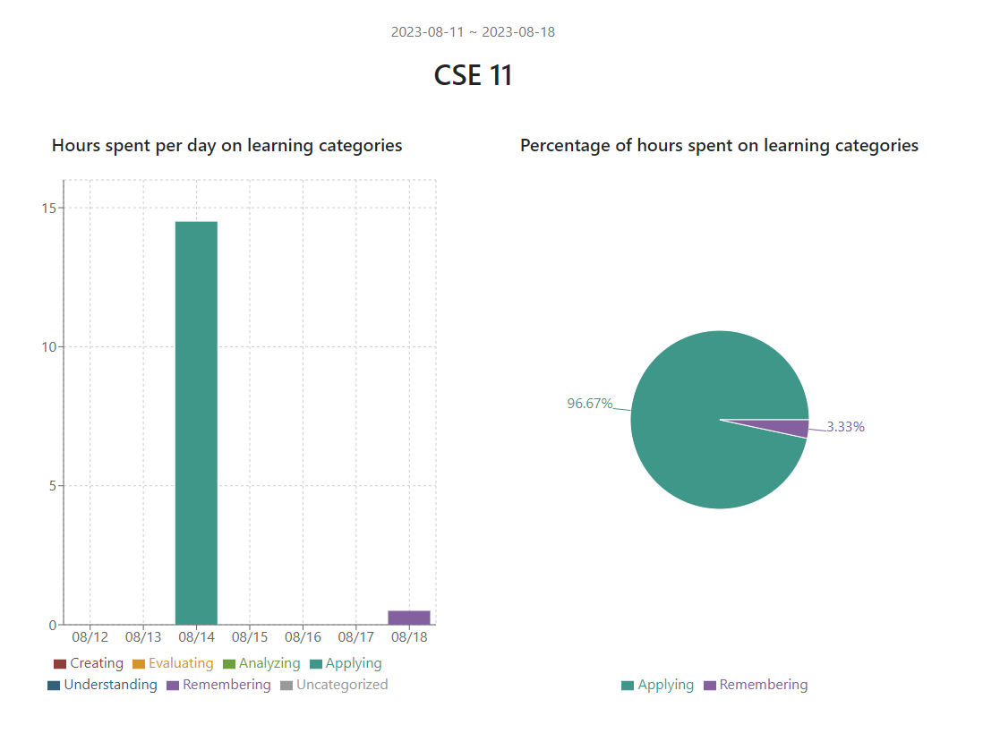
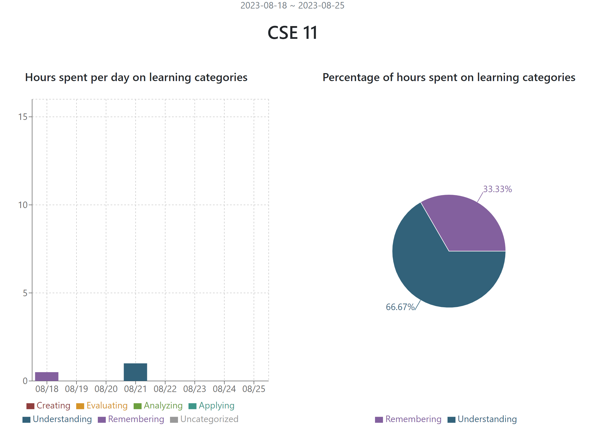
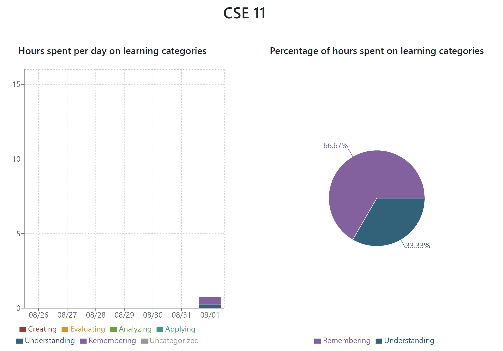

Learning Log Retrospective
Learning Log 1
This week my studying was very light. My class has one assignment every Monday and a quiz every Friday. The information needed for these two tasks is covered pretty thoroughly in the lectures, so I haven't needed to do much other studying. On Monday, I worked for about two and a half hours on the assignment (I accidentally swapped an AM and PM so it shows 14.5 instead of 2.5 in the picture). Then on Friday, I briefly went over the textbook before the quiz. So far, I feel that I am able to keep up with the class from the 8 hours of lectures and discussions, but I'm aware that it moves fast since it is an accelerated class and it is over 5 weeks instead of 10. In the future I expect that it will increase in difficulty and I am prepared to increase my studying activity.
Learning Log 2
Last Friday, I reviewed the textbook before a quiz. On Monday, I studied for the midterm for the class which happened on Wednesday. To study for the midterm, my friend and I did a practice midterm that the professor posted. Doing the practice helped a little bit and I felt more confident in my answers during the actual midterm. I feel that this was a good use of my time since it helped prepare me and I was happy with the score I received on the midterm. Next week, I could put in a bit more time into studying. I assume that as the final draws closer, the course will increase in difficulty. I could also try some other study strategies in the creating or evaluating category.
Learning Log 3
This week was pretty mellow for CSE 11. On Monday there was an assignment but I didn’t study for it. The only other task was a quiz on Friday. Before taking the quiz I briefly reviewed the textbook and a chart from the notes. I think this was helpful since it ended up preparing me for one of the questions on the quiz. The final will be approaching soon, so for next week I plan to take a practice final that the professor posted. I think the learning log application has the potential to be helpful but needs some adjustment to reach that point. First is the ability to edit logged activities since logging it doesn’t help if it’s not accurate. Second is that there should be less options on the pyramid since it is a bit overwhelming. It would make more sense to just pick the level of the pyramid instead of an option from within the level. Additionally, there should be more tools for studying analysis besides the pie chart. If I decided to log my studying hours in the fall I would probably just write it down on paper since it is more convenient. The app should offer some more advanced tools to understand my study habits better.
feel free to reach out at
eschwartzman@ucsd.edu